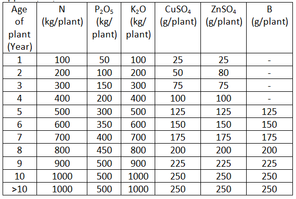
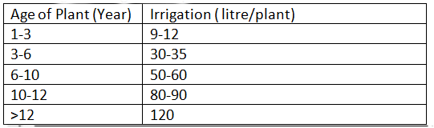
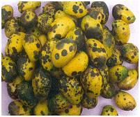
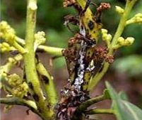
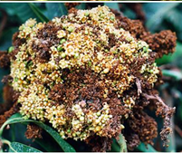
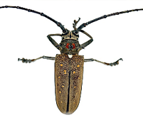
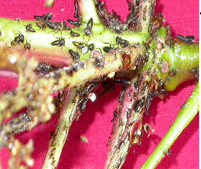
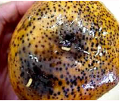
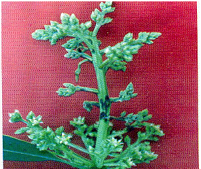

Mango
| Crop Name | Mango (Mangifera indica L.) |
| Suitable Varieties | Langra, Banganapalli, Mallika, Amrapali, , Arka Anmol, Arka Aruna, Totapuri, Bombay Green |
| Land situation | Hilly/Upland and medium land, nearer to water source, well drained loamy to sandy loam |
| Land Preparation | Deep ploughing and levelling may be done and pits of size 1m×1m×1m should be dug during the month of May. Wind break should be planted in two rows in staggered way. |
| Sowing/Planting Time | June-August |
| Seed Rate | In square planting method 100 grafted plants while in high density planting method 250 grafted plants are required per hectare |
| Spacing | In square planting row to row and plant to plant spacing should be 8m and for high density planting the row to row and plant to plant spacing should be 5m |
| Nutrient Management | During planting 50kg well rotten FYM, 100g P2O5 and 100g K2O are applied per pit  |
| Weed Management | Deep Ploughing in May and October months Weeding is done during December to June |
| Orchard Management | Heading back is done at 60cm height when plants are grown upto 1m height after one year during October-November months. Allow the main trunk to grow and again prune back leaving only 3-4 numbers primary branches on the main trunk during March-April months. After 7-10 months during October-November the Primary branches are pruned at 1m length and allow the secondary branches to grow. Then prune the secondary branches and leave only 2-3 numbers of tertiary branches to grow. Pruning of extra branches, disease affected branches in every year just after harvesting of the fruits during July-August and before the flowering within a week in mid December. |
| Water Management | Apply irrigation in ring basin method Irrigate the plant regularly at the initial stages at 5-7 days interval in case of loamy to sandy loam soil while 8-10 days interval clayey soils according to the age of the plants  |
Plant Protection

Anthracnose (leaves and fruits) :
Uproot the unwanted weeds, prune the disease affected plant parts and destroy them. Spray Carbendazim 0.1% or Chlorothalonil 0.2% at 14 days interval till harvesting.

Powdery mildew :
Spray Wettable Sulphur @ 2g/ l or Dinocarp @1ml/l or Carbendazim (0.1%) or Tridemorph ( 0.1%) or Karathane (0.1%) at 15 days interval. The first application may be soon after flowering.

Mango malformation :
• Diseased plants should be destroyed.
• Use of disease free planting material
• Incidence reduced by spraying 100-200ppm NAA during October.
• Pruning of diseased parts along the basal 15-20 cm apparently healthy portions.
• This is followed by the spraying of Carbendazim (0.1%)
Shoot borer:
• Field sanitation
• Collect and destroy the infested plant parts
• Summer ploughing to expose the pupae
• Spray carbaryl 50WP 0.1%.

Mango hoppers :
• void close planting, as the incidence very severe in overcrowded orchards.
• Orchards must be kept clean by ploughing and removal of weeds.
• Spray two rounds of acephate 75 SP@ 1g/lit or phosalone 35 EC@ 1.5 ml/li

Fruit fly :
• Collect fallen infested fruits and dispose them by dumping in a pit
• Provide summer ploughing to expose the pupa
• Monitor the activity of flies with methyl eugenol sex lure traps.
• Bait spray - combing any Dimethoate 30 EC 1 ml/l and molasses or jaggery 10 g/l, two rounds at 2 weeks interval before ripening of fruits.

Biological control :
• Field release of natural enemies Opius compensates and Spalangia philippines

Inflorescence Midge :
• Remove and destroy affected flowers and tender shoots
• Spray dimethoate 30 EC @ 0.06%, methyl demeton 25 EC @0.05%
| Harvesting & Yield | Harvesting Index : • When the skin colour changes from dark green to yellow • Swelling of the chicks around the stem • Pulp colour changes from light yellow to dark yellow colour • When TSS is more than 10% • In case of Langra and Chausa the fruit when dip in the water it submerge completely indicate the maturity • 2-3 fruits start to fall from the tree Harvesting Method : • Always use mango plucker or harvester for harvesting the mango • Harvesting should be done after sunrise and not during the afternoon or sunny day or during the rainy • Always pluck the fruit with its stem preferable 4’’ long stem • Keep the fruits in the plastic crates after cutting the stems under the shade a |
| Postharvest Management | • Trimming : Trimming refers to the cutting of stem that is left on the fruit before packing. Fresh latex oozes out of the stem end, thus staining other fruits in a pack. Dried latex is difficult to remove. • Delatexing/desapping: Invert freshly de-stemmed fruits on plastic or steel mesh racks, allowing the latex to drip for 30 minutes. Or dip freshly de-stemmed fruits in 1 percent alum solution (one-half kg powdered alum per 50 liters of water) for one minute • Sorting/grading: Friuts are being sorted and graded by separating good quality fruits on the basis of ripeness, size, shape insect damaged, pre-harvest damage such as scab and sooty mold, harvesting and handling damage such as latex stains and burns, bruising, abrasion, compression, cuts and punctures etc. • Hot water dip treatment : Graded and sorted fruits are dip in the hot water at 55⁰C for 3 minutes and washed with normal water. • Packaging : Rigid containers such as plastic crates and semi-rigid containers such as bamboo baskets are highly recommended for fresh mangoes and local markets. Cartons or fiberboard boxes should be equipped with a vertical divider in the middle and with ventilation holes at the sides are used for distant markets. |
| Farm Machinery Use | • Tractor with accessories for land preparation and making pits • Mini tarctor or Power tiller for interculture • Foot sparyer or Power sprayer for application of pesticides and micronutrients • Tree pruner, Secateurs, Training-pruning saw and axe etc. For training and pruning of mango plants • Mango plucker/harvester • Hot water treatment unit for post harvest management |
Back